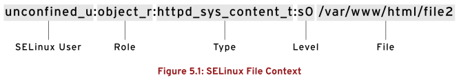

第五章 管理SELINUX安全性
目标：
- 使用SELinux保护和管理服务器的安全性
章节：
- 更改SELinux执行模式
- 控制SELinux文件上下文
- 使用布尔值调整SELinux策略
- 调查和解决SELinux问题
第一节：更改SELinux执行模式
目标：
- 完成本节后，学生应该能：
- 解释SELinux如何保护资源
- 更改系统的当前SELinux模式
- 设置系统的默认SELinux模式
SELinux如何保护资源：
- SELinux可允许或拒绝访问文件及其他资源，且精准度相比用户权限大幅提高。
- SELinux由若干组策略组成，这些策略准确声明了对于应用使用的每个可执行文件、配置文件
和数据文件，哪些操作和访问是被允许的，这被称为 targeted policy。
- 策略声明了各个程序、文件和网络端口的预定义 label。
为什么使用SELinux?
- 并非所有安全问题都可以提前预测。
- SELinux可以防止因为应用程序的漏洞而影响其他应用访问。
- SELinux有一个额外的安全层，此外还有一层复杂结构，执行策略意味着系统某一部分的
弱点不会扩散到其他部分。
- SELinux有三种模式：
1. Enforcing：
SELinux强制执行访问控制规则。
计算机通常在该模式下运行。
2. Permissive：
SELinux处于活动状态，但并不强制执行访问控制规则，而是记录违反规则的日志。
该模式主要用于测试和故障排除。
3. Disabled：
SELinux完全关闭（需要系统重启）。
SELinux安全的基本概念：
- 大多数Linux管理员都熟悉标准用户、组、其他用户的权限安全模型，SELinux提供另一层安全，
它基于对象并由更加复杂的规则控制，称为强制访问控制。
- 要允许远程匿名访问Web服务器，必须打开防火墙端口。
- 这让恶意人员有机会通过安全漏洞侵入系统。
- 如果成功入侵Web服务器进程，就可以获得apache用户和apache组的权限。
- 该用户和组对文档根目录/var/www/html具有读取权限。
- 它还可以访问/tmp和/var/tmp，以及全局可写的任何文件和目录。
- SELinux有一组安全规则，定义进程可以访问哪些文件、目录和端口。
- 每个文件、目录、进程和端口都有专门的安全标签（security label），称为SELinux上下文
（context）。
- SELinux策略使用上下文来确定某个进程能否访问文件、目录或端口。
- 如果没有允许规则，则不允许访问。
- SELinux标签具有多种上下文：user、role、type、sensitivity。
- 目标策略（target policy），即RHEL中启用的默认策略会根据类型上下文（type context）
来制定自己的规则。
- type context名称通常以 _t 结尾。

- Web服务器的类型上下文：httpd_t
- 位于/var/www/html中的文件和目录的类型上下文：httpd_sys_content_t
- 位于/tmp和/var/tmp中的文件和目录的类型上下文：tmp_t
- Web服务器端口的类型上下文：http_port_t
- 在启用SELinux的情况下，破坏了Web服务器进程的恶意用户将无法访问/tmp目录。
- MariaDB服务器的类型上下文：mysqld_t
- 默认情况下，在/data/mysql中的文件具有 mysqld_db_t 的类型上下文。
- 该类型上下文允许MariaDB访问这些文件，但禁止其他服务（如Apache服务）访问。

- 许多命令都使用 -Z 选项来显示或设置SELinux上下文，如ps、ls、cp和mkdir。

更改当前的SELinux模式：
- 要确定当前的SELinux模式，运行getenforce命令。
- 要将SELinux设置为其他模式，使用setenforce命令（临时生效）。

设置默认SELinux模式：
- /etc/selinux/config文件可永久设置SELinux模式，系统在启动时读取并配置。

练习 P124：CHANGING THE SELINUX ENFORCEMENT MODE
第二节：控制SELinux文件上下文
目标：
- 完成本节后，学生应该能：
- 使用semanage fcontext命令，管理决定了文件和目录默认上下文的SELinux策略规则。
- 使用restorecon命令，将SELinux策略所定义的上下文应用到文件和目录。
初始SELinux上下文：
- 在运行SELinux的系统上，所有进程和文件都有相应的label，代表了与安全有关的信息，称为
SELinux上下文。
- 新文件通常从父目录继承其SELinux上下文（mv或cp -a例外）。
- $ ls -Z <filename>：查看文件的SELinux上下文
- $ ls -dZ <directory>：查看目录的SELinux上下文

更改文件的SELinux上下文：
- 命令包括：semanage fcontext、restorecon、chcon。
- semanage fcontext 命令声明文件的默认标签。
- restorecon 命令将该上下文应用于文件。
- chcon 命令更改SELinux上下文，但它不会将上下文更改保存到SELinux上下文数据库中，运行
restorecon 命令后会还原。

定义SELinux默认上下文：
- semanage fcontext 命令可显示和修改 restorecon 用来设置默认文件上下文的规则。
- 它使用扩展正则表达式来指定路径和文件名。
- fcontext 规则中最常用的扩展正则表达式是 (/.*)?，表示"可选择匹配后跟任何数量字符的 /"。
- 它将会匹配在表达式前面列出的目录并递归地匹配该目录中的所有内容。
- semanage fcontext 命令选项：

- policycoreutils 和 policycoreutils-python-utils 软件包提供管理SELinux上下文的工具。

- 这两个软件包中分别包含 restorecon 命令和 semanage 命令。
- 为了确保目录中的所有文件都具有正确的文件上下文，需先运行 semanage fcontext -l，
再运行 restorecon 命令。
- $ semanage fcontext -l：查看所有目录的SELinux上下文

- $ semanage fcontext -a -t <type_context> '<directory>(/.*)?'
# 为新目录添加SELinux类型上下文
$ restorecon -Rvv <directory>
# 保存新添加目录的类型上下文

$ man 8 semanage-fcontext：查看SELinux策略管理文件上下文使用方法
练习 P131：CONTROLLING SELINUX FILE CONTEXTS
第三节：使用布尔值调整SELinux策略
目标：
- 完成本节后，学生应该能：
- 使用setsebool激活/停用SELinux策略规则。
- 使用semanage boolean -l命令来管理SELinux布尔值的持久值。
- 查阅以 _selinux 结尾的man page，寻找有关SELinux布尔值的有用信息。
SELinux布尔值：
- SELinux布尔值是可更改SELinux策略行为的参数。
- SELinux布尔值是可以启用或禁用的规则。
- 安全管理员可以使用SELinux布尔值来有选择地调整策略。
- selinux-policy-doc 软件包附带的SELinux man page中介绍了可用布尔值的用途。
- $ man -k '_selinux'：列出SELinux可用布尔值的用途
- 管理SELinux策略布尔值的命令：
$ getsebool -a：列出所有策略的布尔值及其状态
$ getsebool <selinux_policy>：查看指定策略的布尔值与状态
$ setsebool <selinux_policy> [on|off]：修改指定策略的布尔值
$ setsebool -P <selinux_policy> [on|off]：永久更改策略的布尔值
$ semanage boolean -l：查看策略布尔值的当前状态、默认状态与简短描述
- 非特权用户可以运行 getsebool 命令。
- 只有超级用户才能运行 semanage boolean -l 和 setsebool -P。

- -P 选项可将策略永久保留

- $ semanage boolean -l -C：查看当前状态与默认状态不同的策略布尔值

练习 P136：ADJUSTING SELINUX POLICY WITH BOOLEANS
第四节：调查和解决SELinux问题
目标：
- 完成本节后，学生应该能：
- 使用SELinux日志分析工具。
- 使用sealert命令，在SELinux故障排除期间显示有用的信息。
对SELinux问题进行故障排除：
- 最常见的SELinux问题是使用不正确的文件上下文或设置了不正确的策略布尔值。
监控SELinux冲突：
- 安装 setroubleshoot-server 软件包，侦听/var/log/audit/audit.log中的审核消息，
将SELinux消息发送至/var/log/messages。
- 日志包括SELinux冲突的唯一标识符（UUID）。
- $ sealert -l <UUID>：用于生成特定事件的报告
- $ sealert -a /var/log/audit/audit.log：在该文件中生成所有事件的报告
- 示例：Apache Web服务器SELinux冲突分析
1. /var/log/audit/audit.log与/var/log/messages日志中记录的SELinux相关信息。


2. 使用sealert命令查看报错的详细信息，该信息对应以上日志文件。


3. $ ausearch -m AVC -ts recent：在/var/log/audit/audit.log中搜索AVC类型信息

Web控制台：
- 使用Web控制台查看SELinux报错信息，如下所示：

练习 P143：INVESTIGATING AND RESOLVING SELINUX ISSUES
Lab P147：MANAGING SELINUX SECURITY